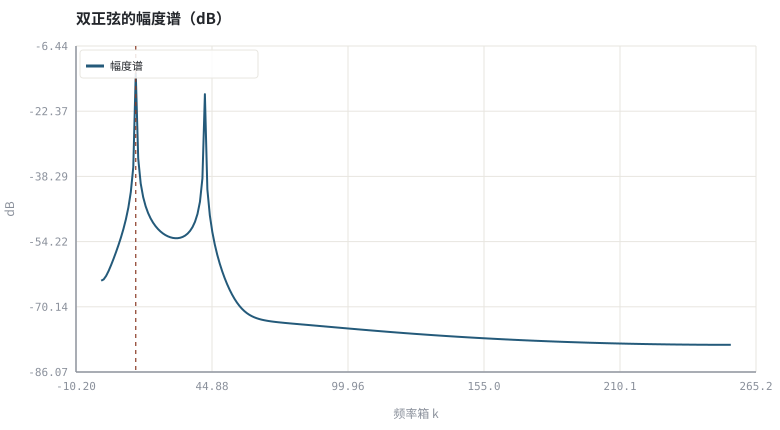
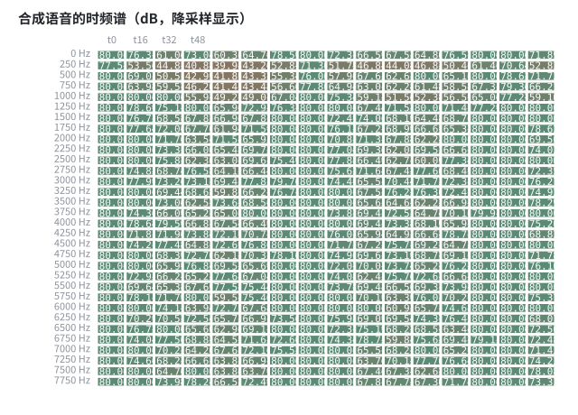
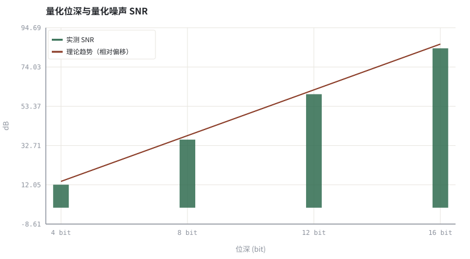

第 02 章采样、量化与时频表示：从 PCM 到 STFT
3A 的所有算法都在「一帧频谱」上做决策；先把这块数据结构讲透。
本章位置：第 01 章 · 声学链路与信号模型：房间、麦克风与回声路径 给出时域的 h，本章给出观察它的频域工具；第 03 章 · 怎么算「变好了」：客观指标、尺度与主观听测 用这些工具定义指标，第 12 章 · 谱减、过减因子与音乐噪声 与 第 19 章 · 时频掩码：IBM / IRM / CRM 与监督学习形式化 将用它实现谱减与神经掩码。
STFT 是把一维流按滑动窗口切成二维矩阵；istft(stft(x)) == x 是一条单元测试。下卷所有掩码模型，本质上都是在这个矩阵上做逐元素乘法。
- 能说明采样率、位深、帧长与算法延迟的关系。
- 能手推 radix-2 FFT 的蝶形结构并验证 Parseval 定理。
- 能解释 STFT 的窗、重叠相加与时频分辨率折中。
- 能量化位深与量化噪声的信噪比关系。
§知识点地图
每个知识点都配了 1～2 个扩展学习链接；本章完整资源清单见 扩展学习。
| # | 知识点 | 扩展学习 | 状态 |
|---|---|---|---|
| 1 | 采样与混叠 | Python 标准库文档 ↗ · Short-time Fourier transform ↗ | 正文已覆盖 |
| 2 | 量化位深与量化噪声 | ffmpeg afftdn ↗ · Microsoft DNS Challenge ↗ | 正文已覆盖 |
| 3 | PCM 与 WAV 容器 | Short-time Fourier transform ↗ · Cooley–Tukey FFT ↗ | 正文已覆盖 |
| 4 | DFT 与 radix-2 FFT | Cooley–Tukey FFT ↗ · Python 标准库文档 ↗ | 正文已覆盖 |
| 5 | Parseval 定理 | Short-time Fourier transform ↗ · Cooley–Tukey FFT ↗ | 正文已覆盖 |
| 6 | STFT 与 Hann 窗 | Short-time Fourier transform ↗ · librosa ↗ | 正文已覆盖 |
| 7 | 重叠相加 OLA | Short-time Fourier transform ↗ · Cooley–Tukey FFT ↗ | 正文已覆盖 |
| 8 | 时频分辨率折中 | Short-time Fourier transform ↗ · torchaudio ↗ | 正文已覆盖 |
§2.1三段不可逆的信息压缩
真实声压是连续时间、连续幅度的。进入算法前经过三步：抗混叠滤波 + 采样（时间离散化）、量化（幅度离散化）、分帧（局部平稳假设）。每一步都丢信息，也各自带一个必须记住的约束。
| 步骤 | 关键参数 | 丢掉什么 | 3A 里的后果 |
|---|---|---|---|
| 采样 | 16 k / 48 kHz | 高于奈奎斯特频率的成分 | 宽带回声需更高采样率才有足够 h 精度 |
| 量化 | 16 / 24 bit | 幅度精度，引入量化噪声 | 低电平近端语音被 AGC 放大时噪声一起被放大 |
| 分帧 | 20–32 ms、50% 重叠 | 帧内非平稳细节 | 帧长 + 前瞻直接决定算法延迟 |
SNR_量化 ≈ 6.02·B + 1.76 dB （满幅正弦、均匀量化）
§2.2FFT 只是 DFT 的一个 O(N log N) 实现
X[k] = Σ_{n=0}^{N−1} x[n]·e^(−j2πkn/N) | Σ|x[n]|² = (1/N)Σ|X[k]|²
本书的 tools/dsp.py 手写迭代 radix-2 FFT：位反转置换 + log₂N 层蝶形。这样做不是重复造轮子，而是让「频域自适应滤波」「谱减」「复数掩码」都能被逐行读懂。附录 A.6 给出迁移到 numpy.fft / torchaudio 的对照。
§2.3STFT：把一维流变成二维图
X[t,k] = Σ_n x[n + tH]·w[n]·e^(−j2πkn/N) ，H = N/2
帧长 N 越大，频率分辨率越好、时间分辨率越差；这就是 3A 里最基础的折中。Hann 窗抑制频谱泄漏，50% 重叠 + 加权重叠相加（WOLA）保证修改频谱后仍能无失真重建——这是所有掩码类算法能成立的前提，下卷会反复用到。
本书 stft() 在信号前后各补 N/2 个零，确保首尾样本也被两帧覆盖；否则在频谱被谱减/掩码修改后，边界会因窗平方和过小而被放大。
§Python 实验
实验 2-1 · FFT/Parseval、量化噪声与 STFT 时频谱
#!/usr/bin/env python3
# -*- coding: utf-8 -*-
"""手写 FFT 验证能量守恒，测量不同位深的量化 SNR，并画出时频热力图。
全部语音 / 噪声 / 房间冲激响应均为代码合成信号，仅用于教学演示机制与量级。
"""
from __future__ import annotations
import math
import pathlib
import random
import statistics
import sys
import time
_here = pathlib.Path(__file__).resolve()
for _p in _here.parents:
if (_p / "tools" / "dsp.py").exists():
sys.path.insert(0, str(_p / "tools"))
break
from dsp import (SAMPLE_RATE, fft, hann, stft, istft, magnitude_db, spectrum,
white_noise, tone, chirp, synthetic_speech, rir, convolve,
fft_convolve, delay, clip, normalize_peak, rms, rolling_rms,
smooth, db, energy_db, snr_db, erle_db, seg_snr_db,
scale_align, si_sdr_db, lufs_approx,
write_wav, read_wav, wav_info)
from chart import Chart, heatmap, BLUE, RED, GREEN, AMBER
FIG = _here.parents[1] / "fig"
AUDIO = _here.parents[1] / "audio"
FIG.mkdir(exist_ok=True)
AUDIO.mkdir(exist_ok=True)
random.seed(7)
# ---- 参数区 ----
N_FFT, HOP = 512, 256
N = 8000
BITS = (4, 8, 12, 16) # 对比的量化位深
# ---- 计算与作图 ----
rng = random.Random(7)
sig = [0.45 * math.sin(2 * math.pi * 440 * i / SAMPLE_RATE) +
0.25 * math.sin(2 * math.pi * 1310 * i / SAMPLE_RATE) for i in range(N_FFT)]
re, im = fft(sig[:], [0.0] * N_FFT)
time_energy = sum(v * v for v in sig)
freq_energy = sum(re[k] ** 2 + im[k] ** 2 for k in range(N_FFT)) / N_FFT
peak_bin = max(range(N_FFT // 2), key=lambda k: math.hypot(re[k], im[k]))
sp = spectrum(sig, N_FFT)
c = Chart(FIG / "02-spectrum.svg", "双正弦的幅度谱（dB）", xlabel="频率箱 k", ylabel="dB")
c.line(range(len(sp)), sp, BLUE, label="幅度谱")
c.vline(peak_bin, RED, label="峰值箱")
print("频谱图:", c.save())
speech = synthetic_speech(rng, N)
frames = stft(speech, N_FFT, HOP)
spec = magnitude_db(frames, N_FFT)
rows = [row[::2] for row in spec[::8]] # 降采样，便于 SVG 阅读
heatmap(FIG / "02-spectrogram.svg", rows,
["%d Hz" % int(k * SAMPLE_RATE / N_FFT) for k in range(0, N_FFT // 2, 8)][:len(rows)],
["t%d" % (i * 4) for i in range(len(rows[0]))][::4],
title="合成语音的时频谱（dB，降采样显示）", vmin=-75, vmax=-15)
print("时频图:", str(FIG / "02-spectrogram.svg"))
def quantize(x, bits):
step = 2.0 / (2 ** bits)
return [round(v / step) * step for v in x]
snrs = []
for b in BITS:
q = quantize(speech, b)
noise = [q[i] - speech[i] for i in range(N)]
snrs.append(snr_db(speech, noise))
qchart = Chart(FIG / "02-quantization.svg", "量化位深与量化噪声 SNR", xlabel="位深 (bit)", ylabel="dB",
xticks=[(i, "%d bit" % b) for i, b in enumerate(BITS)])
qchart.bars(range(len(BITS)), snrs, GREEN, label="实测 SNR")
qchart.line(range(len(BITS)), [6.02 * b + 1.76 - 12.0 for b in BITS], RED,
label="理论趋势（相对偏移）")
print("量化图:", qchart.save())
write_wav(AUDIO / "02-4bit.wav", quantize(speech, 4))
write_wav(AUDIO / "02-16bit.wav", quantize(speech, 16))
print("Parseval 时域=%.6f 频域=%.6f 相对误差=%.2e | 峰值箱=%d 对应 %.0f Hz" %
(time_energy, freq_energy, abs(time_energy - freq_energy) / time_energy,
peak_bin, peak_bin * SAMPLE_RATE / N_FFT))
print("量化 SNR: " + " ".join("%dbit=%.1fdB" % (b, s) for b, s in zip(BITS, snrs)) +
" | 每增 1 bit 约 +6 dB")操作：核对 Parseval 相对误差应接近机器精度；试听两个 WAV 比较量化噪声。 预期与判读：Parseval 误差在 1e-15 量级，说明手写 FFT 的归一化正确；峰值箱对应 440 Hz 附近。量化 SNR 随位深约每 bit 提升 6 dB，与 6.02B+1.76 一致（本例信号非满幅，故有固定偏移）。
改参数看趋势：把 N_FFT 改成 1024，观察频率分辨率提高而时间分辨率下降。 文件位置：part0/02-time-frequency/code/02-time-frequency.py



02-4bit.wav
4 bit 量化，可明显听到量化噪声（16 kHz / 16-bit 单声道，代码合成信号，不是真实录音）
02-16bit.wav
16 bit 量化，接近原始合成语音（16 kHz / 16-bit 单声道，代码合成信号，不是真实录音）
代码块右上角可一键复制；仓库里的 code/*.py 由 tools/extract_code.py 从这些代码块自动抽取。脚本只用标准库、固定 random.seed(7)，运行后写出 fig/*.svg 与 audio/*.wav；批量运行用 ./tools/run_python.sh。
§可选真机命令片段
以下命令不参与批量运行，需要本机自行安装对应工具。滤镜是否可用取决于本机 ffmpeg 版本与编译选项，请先用 ffmpeg -filters / ffmpeg -version 自查，并以 https://ffmpeg.org/ffmpeg-filters.html 与各自官方文档为准；本书不假定任何特定版本具备某项能力。
用 ffmpeg 检查采样率、重采样与电平统计
ffmpeg -hide_banner -i input.wav -af volumedetect -f null - 2>&1 | grep -E 'mean_volume|max_volume'
ffmpeg -hide_banner -i input48k.wav -af aresample=16000 -c:a pcm_s16le out16k.wav
ffmpeg -hide_banner -i out16k.wav -af astats=metadata=1 -f null - 2>&1 | grep -E 'RMS level|Peak level'说明：aresample 负责采样率转换，volumedetect / astats 给出量化前后的电平核对；滤镜可用性以本机 `ffmpeg -filters` 为准。
§本章参考资料
按本章知识点挑选的精读资料；更多检索入口见 扩展学习。
The Scientist and Engineer's Guide to DSP ↗
教材免费在线 DSP 教材，卷积/FFT/滤波器章节讲解直观
推荐理由：免费在线 DSP 教材，卷积/FFT 章节直观
§常见误区
- 把 FFT 结果当成 dB 谱直接比较，忘记取幅度与对数。
- 频谱修改后不用 WOLA 归一化，边界出现爆音。
- 混淆频率箱索引与实际 Hz（需乘 fs/N）。
- 用长帧追求频率分辨率，忽略实时链路的延迟预算。
§习题与思考
- 推导 N=512、fs=16 kHz 时每个频率箱对应多少 Hz。
- 解释为什么 50% 重叠的 Hann 窗能无失真重建。
- 把量化位深从 16 降到 8，估算 AGC 放大后噪声的听感变化。
§扩展学习
继续检索
- Google Scholar：sampling quantization STFT overlap-add ↗
- arXiv：sampling quantization STFT overlap-add ↗
- GitHub：sampling quantization STFT overlap-add ↗
全书链接总表见 FFmpeg Filters 文档 ↗ 与 附录 A.7；滤镜是否可用请以本机 ffmpeg -filters 为准。